Formation, recherche & innovation
137 entreprises · 169 articles · 22 magazines
Articles
 Publireportage
PublireportageGB Microfab – « Des artisans technologues » : microtechnologies pour une horlogerie d'exception
Micro et nanotechnologies appliquées aux composants horlogers
Interview
Schweizerische Bundesbahnen SBB: «Die Digitalisierung ermöglicht es der SBB, deutlich mehr Leistung aus dem bestehenden Netz herauszuholen»
Interview mit Linus Looser, Mitglied der Konzernleitung und Leiter SBB Infrastruktur
Publireportage
Argonet – Soluzioni informatiche e telematiche all’avanguardia
Argonet è specializzata nel rispondere alle esigenze tecnologiche delle aziende
Interview
Bergauer AG: «Wir bieten schlüsselfertige Gesamtsysteme für das Verkehrsmanagement»
Interview mit Urs Friess, Managing Director (aussi en français et en italien)
Publireportage
Michel D’Andrea SA – Trente ans à dompter falaises et pentes instables
Pionnière des travaux acrobatiques sur corde
Publireportage
ERTEC SA – Une expertise reconnue en ingénierie routière
Nouvelle organisation et « radiologie de la route »
Publireportage
Solmani SA – La signalisation dynamique pour des routes intelligentes
SMARTROAD, Inno-Display et TechCity
Interview
Accompagner les sous-traitants pour faire face à la crise
Interview de Séverine Favre, secrétaire générale de l'apiah
 Interview
InterviewAFDT – Faire la promotion des métiers du décolletage
Interview de Grégory Affolter, président de l'AFDT
 Interview
InterviewKlinik für Orthopädische Chirurgie und Traumatologie HFR
Interview mit Moritz Tannast, Professor und Chefarzt der Klinik für Orthopädische Chirurgie und Traumatologie
 Interview
InterviewKlinik für Allgemeine Chirurgie HFR
Interview mit Bernhard Egger, Professor und Chefarzt der Klinik für Allgemeine Chirurgie
Interview
L'analyse médicale digitalisée d'un bout à l'autre
Entretien avec Dr Jean-Luc Magnin, responsable du laboratoire
Interview
Klinik für Gynäkologie und Geburtshilfe HFR
Interview mit PD Dr. Dorothea Wunder, Leitende Ärztin Gynäkologie und Geburtshilfe
Interview
Das Mikrobiom von Kindern hat einen Einfluss auf ihre Gesundheit
Interview mit PD Dr. med. Petra Zimmermann, PhD, Stellvertretende Chefärztin Pädiatrie und Leiterin Kinderinfektiologie
Interview
Un master orienté médecine de famille
Collaboration fructueuse entre l'HFR et l'Université de Fribourg – Entretien avec Dr Antoine Meyer
Interview
« Plus de 65'000 personnes travaillent dans l'horlogerie en Suisse »
Interview de Ludovic Voillat, secrétaire général de la Convention patronale de l'industrie horlogère
Interview
Un siècle de recherche communautaire au service de la branche horlogère
Interview de Fabienne Marquis Weible, directrice de l'ASRH
Dossier
WOSTEP – La modularité dans la formation horlogère
Formations par modules et nouveau cours de rechargement par soudure laser
 Interview
InterviewTrouver du personnel : un défi pour la branche horlogère
Interview de Ludovic Voillat, secrétaire général de la CPIH
Interview
SSC Société Suisse de Chronométrie – Vers davantage de communication et de rencontres
Interview de Michel Fazzone, président de la Société Suisse de Chronométrie
Interview
ASRH – Une étude pour usiner correctement le laiton sans plomb
Interview de Fabienne Marquis Weible, directrice de l'ASRH
 Interview
InterviewL'ATIO – Point de repère depuis 2014
Interview d'Angelo Piritore et d'Alessandro Recalcati, coprésidents de l'ATIO
 Interview
InterviewASRH – Association Suisse pour la Recherche Horlogère : « La science au profit de l’horlogerie »
Interview de Fabienne Marquis Weible, directrice de l’ASRH
DossierSociété Suisse de Chronométrie – « L’incontournable référence horlogère »
Avec Michel Fazzone, directeur manufacturing chez Jaeger-LeCoultre, président de la SSC
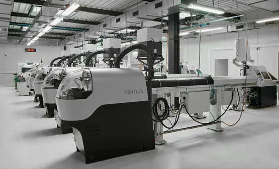
PublireportageAuchlin SA – L’innovation, moteur de son développement
La troisième génération rejoint l’expert du polissage de précision
 Publireportage
PublireportageRyf AG – Les experts de la microscopie industrielle
Microscopes et systèmes de mesure à Granges
Publireportage
Wostep – Former les meilleurs polisseurs, un engagement du WOSTEP
La Fondation WOSTEP et ses formations en polissage
Interview
L'innovation, un levier de différentiation majeur pour l'industrie de haute précision
Interview d'Alexandre Catton, directeur du Salon EPHJ
Publireportage
WOSTEP – Enseigner l'horlogerie à l'heure du digital
La Fondation WOSTEP se lance dans l'e-learning
Interview
TWS Technical Watchmaker Show – La passion et l’authenticité de la technique horlogère
Entretien avec Eric Zuccatti, président du Technical Watchmaker Show
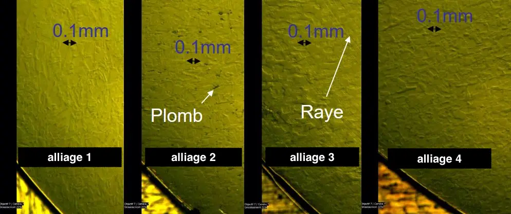
InterviewL’Association suisse pour la recherche horlogère – Objectif : préparer l’arrivée du laiton sans plomb
Entretien avec Fabienne Marquis Weible, directrice de l’ASRH
Interview
Société suisse de chronométrie (SSC) – « L’innovation est le moteur de l’industrie horlogère »
Rencontre avec son président, Nicolas Clerc
Interview
Maintenir la diversité économique de la région
Interview de Daniel Rossellat, vice-président de la Région de Nyon et responsable de l'économie, syndic de Nyon
 Interview
InterviewInstitut fédéral des hautes études en formation professionnelle IFFP – Préparer l'avenir de la formation professionnelle
Interview de Jean-Pierre Perdrizat, directeur par intérim
Interview
L’Association suisse pour la recherche horlogère (ASRH) – Une interface entre la recherche et l’industrie
Entretien avec Fabienne Marquis Weible, directrice
Interview
Association des Fabricants de Décolletages et de Taillages – Une association qui veille à la relève
Entretien avec Dominique Lauener, président de l’AFDT
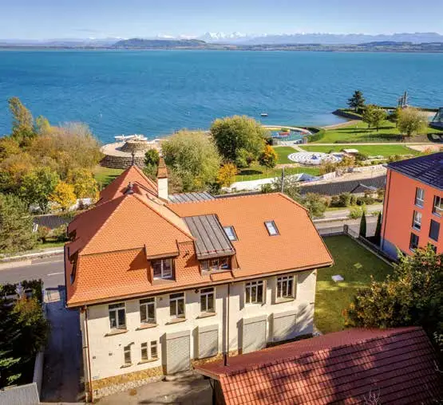
PublireportageWostep – Perfectionnement horloger à la carte
Une école internationale d’horlogerie qui forme aussi l’industrie locale
Interview
Du laboratoire jusqu’à l’industrie
Interview de Monsieur Christophe Ballif, Prof. EPFL, directeur du PV-Lab et du PV-center au CSEM
Interview
Centre de l’énergie CEN – Catalyser et fédérer
Interview de Monsieur François Vuille, Directeur du Centre de l’énergie (CEN) de l’EPFL
 Interview
InterviewHaute Ecole d’Ingénierie du Valais – Investir pour doper la recherche
Interview de Monsieur Gaëtan Chérix, directeur de la Haute Ecole d’Ingénierie du Valais
Interview
Pôle Energies HEIG-VD – Objectif : fédérer les recherches à l’interne
Interview de Monsieur Massimiliano Capezzali, Professeur à la Haute Ecole d’Ingénierie
Publireportage
ADV Constructions SA – Entreprendre ensemble... autrement
Company profile
Publireportage
Archeodunum – Des investigations archéologiques au service de l’aménagement du territoire
Company profile
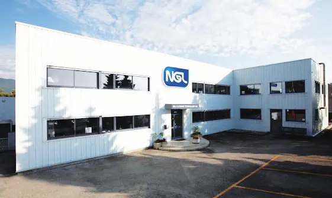
PublireportageNGL Cleaning Technology SA – Un concept unique !
NGL Academy et Afterworks pour les 40 ans de l'entreprise
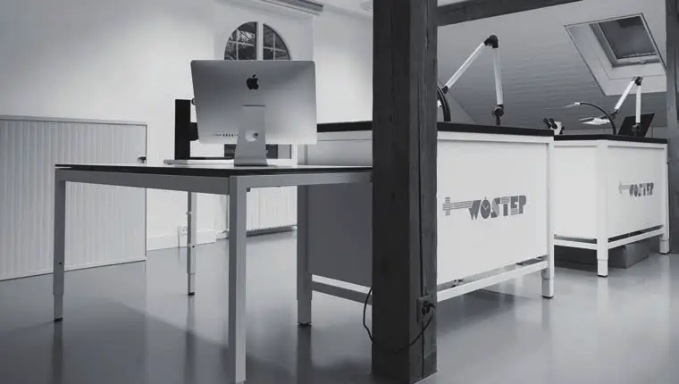
PortraitWOSTEP – Garant de la relève horlogère
Centre de formation et de perfectionnement horloger à Neuchâtel
Portrait
CEFNA – Centre de formation neuchâtelois pour adultes – Innovation & expertise
Formations horlogères modulaires pour adultes
 Interview
InterviewSektion Emmental
Interview mit Walter Gerber, Präsident HIV Sektion Emmental
 Interview
InterviewUniversität Bern – Die Universität Bern folgt der Vision « Wissen schafft Wert »
Interview mit Prof. Dr. Christian Leumann, Rektor der Universität Bern
 Publireportage
PublireportageDeux têtes valent mieux qu'une / Zwei Köpfe sind besser als einer
Gymnase français de Bienne
 Interview
Interview« We prepare our students for life beyond school »
Interview with Ms Denise Coates, Director – International School of Berne
 Interview
InterviewNMS Bern – « Lernende ganzheitlich fördern und fordern »
Interview Annette Geissbühler, Direktorin
Interview
L'ASRH au carrefour de la recherche – Quand les horlogers mutualisent les coûts
Entretien avec Fabienne Marquis Weible, directrice
Interview
Chaque voix doit être impliquée
Entretien avec M. David Payot, municipal en charge de l'Enfance, de la Jeunesse et des Quartiers
Publireportage
Biopôle – Plus qu'un parc scientifique, une communauté dynamique dans le domaine des sciences de la vie
Biopôle – More than a science park: a vibrant life science community
Publireportage
Centre d'Imagerie Biomédicale – CIBM : une structure de recherche ouverte et ambitieuse en imagerie biomédicale
Publireportage
CIFER Centre de formation – Valoriser le métier d'électricien de réseau
Enhancing the status of the power network electrician
Publireportage
Ecole Nouvelle de la Suisse Romande – ENSR
Interview
La Haute Ecole de Santé Vaud au cœur de la cité – Affûtée pour relever les défis du 21e siècle
Entretien avec Mme Mireille Clerc, directrice de HESAV
Publireportage
LHC – Lausanne Hospitality Consulting : l'excellence suisse qui fascine le monde
Swiss excellence around the world
Publireportage
Centre d’Etudes et de Transferts Technologiques de la HEIG-VD – CeTT
Un facilitateur entre le milieu académique et l’économie (français et anglais)
Publireportage
École Minerva – Un acteur reconnu de la formation paramédicale
Publireportage
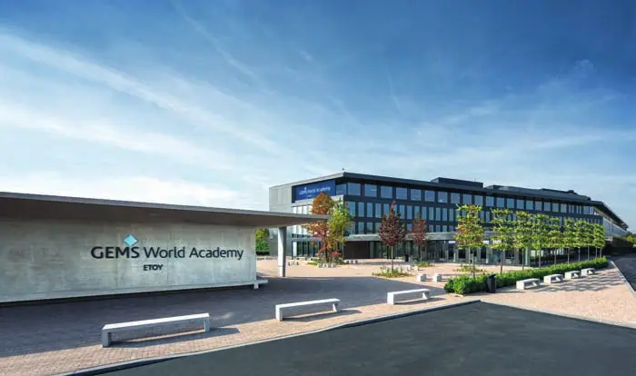
PublireportageÉcole Internationale GEMS World Academy-Etoy – Des élèves équilibrés au service de la communauté
Balanced students who give back to the community (français et anglais)
 Publireportage
PublireportageHESAV – Haute Ecole de Santé Vaud : un acteur dynamique du système de soins et de la formation
A dynamic player in the healthcare and training system (français et anglais)
 Interview
InterviewLa HEP Vaud, au cœur du tissu universitaire – Enseignant, un métier toujours plus recherché
Entretien avec son recteur, M. Guillaume Vanhulst (français et anglais)
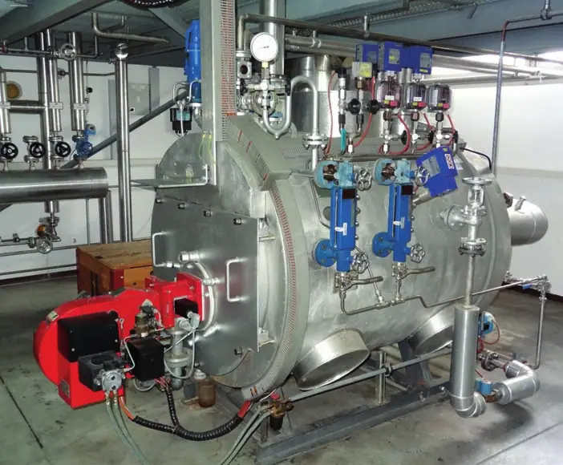
PublireportageL’institut de génie thermique (IGT) – L’énergie comme défi du futur
Energy – the challenge of the future (français et anglais)
 Interview
InterviewInstitut fédéral des hautes études en formation professionnelle IFFP – Des contacts étroits avec les partenaires de la formation professionnelle
Un entretien avec le Prof. Dr Alexandre Étienne, Directeur suppléant de l’IFFP, Directeur régional du site de Lausanne
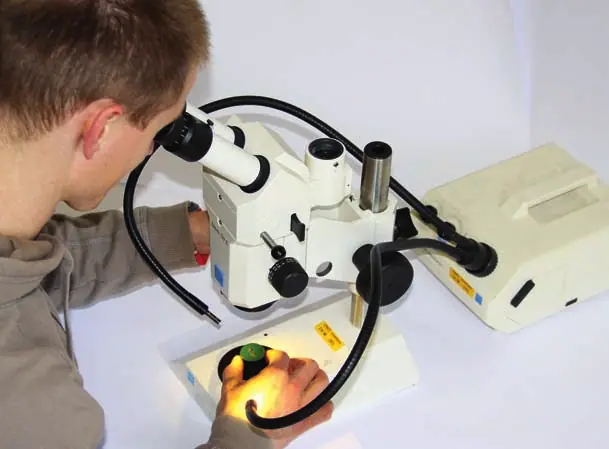
PublireportageInstitut Suisse de la Soudure - SWI – Une soudure ne se vérifie pas, elle se valide !
Welding isn’t verified, it’s validated! (français et anglais)
Interview
Les prestations d’ingénieurs sont des services intellectuels, pas des marchandises
Interview de Mario Marti, Secrétaire général de l’usic
Interview
VSS – Schweizerischer Verband der Strassen- und Verkehrsfachleute
Interview mit Dr. Dieter Wepf, Präsident
Publireportage
Laboroute SA – Un laboratoire de pointe au service de la construction routière
Béton, granulats et enrobés bitumineux
Interview
Convention patronale de l'industrie horlogère suisse (CP) : « Nous avons besoin de plus d'apprentis et d'entreprises qui créent de l'emploi »
Entretien avec Elisabeth Zölch, Présidente de la CP
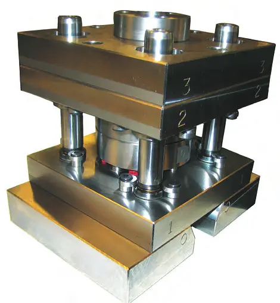
PublireportageCompétences pointues pour le Centre de Technologies Microtechniques SA
 Publireportage
PublireportageMW Programmation SA – Pilotes pour commandes numériques
 Publireportage
PublireportageLe ceff INDUSTRIE, la formation à la carte pour les jeunes générations
Centre de formation professionnelle Berne francophone, Saint-Imier
PublireportageCEFNA, votre partenaire formation
Formation des adultes dans le canton de Neuchâtel
 Publireportage
PublireportageCentre interrégional de perfectionnement CIP – Au cœur de la passion horlogère
Formation pour adultes à Tramelan
 Publireportage
PublireportageCEJEF – Division technique : quatre niches de formation au cœur d'une région industrielle
Centre jurassien d'enseignement et de formation, Porrentruy
 Publireportage
PublireportageCFH : formation de pointe conforme aux attentes du marché
Centre de Formation dans le domaine de l'Horlogerie – Antonio Ciancio et Sébastien Monney
PublireportageCentre interrégional de formation des montagnes neuchâteloises – CIFOM : pour savoir vivre avec savoir-faire
Formation professionnelle et continue
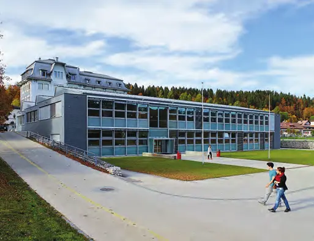
PublireportageÉcole technique de la Vallée de Joux – ETVJ
Une offre de formation en contact avec les réalités du terrain
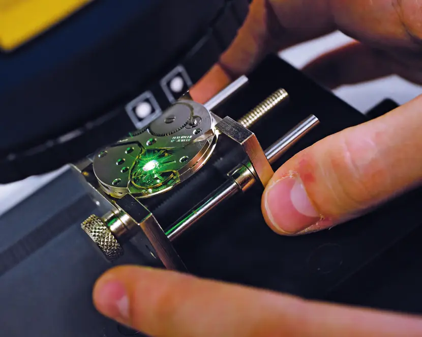
PublireportageHaute École Arc Ingénierie – Formation et recherche appliquée au service de l'Arc jurassien
Avec Olivier Duvanel, directeur adjoint
 Publireportage
PublireportageWOSTEP – Un demi-siècle de formation horlogère suisse à l'étranger
Fondation pour la formation et le perfectionnement horlogers
 Interview
InterviewMiser sur la fiscalité, l'innovation-formation et le foncier
Interview d'Alain Riedo, directeur de la Chambre de commerce et d'industrie Fribourg (CCIF)
 Interview
InterviewPromouvoir l'IT pour l'énergie et l'environnement
Interview de Christian Meixenberger, président du Cluster IT Valley
 Interview
InterviewL'école au diapason du développement démographique
Entretien avec Mme Antoinette de Weck, conseillère communale en charge des écoles et de l'action sociale
 Interview
InterviewUniversität Bern – Interview mit Prof. Dr. Martin Täuber, Rektor
« Wir bekennen uns zur europäischen Tradition der Volluniversität »
 Interview
InterviewDirektion für Bildung, Soziales und Sport der Stadt Bern – Interview mit Franziska Teuscher
« Wir sind nahe bei den Freuden und Sorgen der Stadtberner Bevölkerung »
Interview
Une filière bilingue unique en Suisse
Interview de Cédric Némitz, directeur de la formation, de la culture et du sport de la Ville de Bienne
 Publireportage
PublireportageÉcole française de Berne – L'excellence pour tous
Entretien avec Gabriel Galice, président de l'École française de Berne
Publireportage
Answer SA
Solutions de consolidation de données financières et cybersécurité
 Publireportage
PublireportageL'Université Ouvrière de Genève (UOG)
 Interview
InterviewAubonne – Développer notre offre de tourisme vert
Interview de Gisèle Burnet, municipale (instruction publique, affaires sociales, petite enfance, culture et tourisme)
 Interview
InterviewGland – Offrir aux jeunes des lieux de rencontre
Interview de Christine Girod, municipale en charge de l'accueil de l'enfance, de la jeunesse et des écoles
 Interview
InterviewCossonay – Un centre entièrement dédié à l'enfance
Interview de Valérie Induni, municipale (protection civile, cultes, écoles et petite enfance)
Interview
«Wir brauchen mehr Lehrlinge und mehr Unternehmen, die Lehrstellen schaffen»
Interview mit Elisabeth Zölch, Präsidentin CP
Interview
La recherche horlogère communautaire – L'ASRH au carrefour des intérêts communs
Entretien avec Fabienne Marquis Weible, directrice
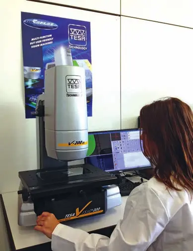
PublireportageCFH : formation de pointe conforme aux attentes du marché
CFH: state-of-the-art training to meet the needs of the market
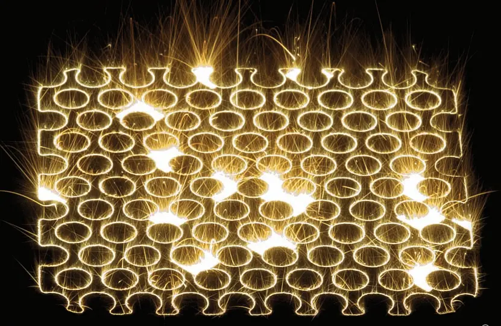
PublireportageEichenberger Futuretech AG – Le pionnier de la fusion sélective au laser
Publireportage
Altair-Consulting – Experts en prototypage
Dossier
Staatssekretariat für Bildung, Forschung und Innovation SBFI
 Interview
InterviewUniversitätsSpital Zürich – Im Gespräch mit Spitaldirektorin Rita Ziegler
 Interview
InterviewH+ Die Spitäler der Schweiz – Interview mit Charles Favre, Präsident
Interview
Hôpitaux universitaires de Genève – La qualité et l'innovation, un engagement au quotidien
Interview de Bertrand Levrat, Directeur général des HUG
Interview
Pour une médecine humaniste
Interview du Pr. Pierre-François Leyvraz, Directeur général du Centre hospitalier universitaire vaudois (CHUV)
 Interview
InterviewSSCB – Swiss Stem Cell Bank: tra conservazione e ricerca, un impegno a tutto campo sul fronte delle cellule staminali
Intervista a Patrizia Franconi, CEO (version anglaise incluse)
 Publireportage
PublireportageForte impegno nella ricerca, eccellenza clinica e innovazione tecnologica: il Cardiocentro Ticino guarda avanti
Version anglaise incluse : Cardiocentro Ticino looks to the future
PublireportageLo Swiss Institute for Regenerative Medicine (SIRM) di Taverne
Dove la ricerca getta le basi per la medicina del futuro e per lo sviluppo culturale ed economico del territorio (version anglaise incluse)
Interview
Departement Chemie Universität Basel – Interview mit Prof. Dr. Marcel Mayor, Departementsleiter
Version française incluse : Département de chimie de l'Université de Bâle
Interview
Inselspital Universitätsklinik für Hals-, Nasen- und Ohrenkrankheiten, Kopf- und Halschirurgie
Kompetente medizinische Versorgung im gesamten Hals-, Nasen- und Ohrenbereich – Interview mit Prof. Dr. med. Marco Domenico Caversaccio (version française incluse)
 Publireportage
PublireportageUn centre consacré à l'étude du métabolisme
Département de physiologie de l'Université de Lausanne (version anglaise incluse)
Interview
Hôpitaux universitaires de Genève – HUG – Département de santé mentale et psychiatrie
Interview du Professeur Jean-Michel Aubry, Chef du Département (version allemande incluse)
 Publireportage
PublireportageHumabs BioMed SA – A cure for serious infections developed from former sufferers
 Publireportage
PublireportagePoliclinique médicale universitaire Lausanne – Soins de qualité et création de connaissances
 Interview
InterviewSolothurner Handelskammer – Im Gespräch mit Direktor Daniel Probst
Conditions-cadres, export et pénurie de main-d'œuvre qualifiée
 Interview
InterviewSchuldirektion der Stadt Solothurn – Interview mit Irène Schori, Schuldirektorin
Les écoles de la ville de Soleure
Interview
Schule Aarau – Interview mit Remi Bürgi, Geschäftsleiter
Le modèle de l'école intégrative
 Interview
InterviewStadt Baden – Interview mit Stadträtin Ruth Müri, Vorsteherin Ressort Bildung
Baden, ville de formation
 Interview
InterviewSchweizerische Bauschule Aarau – Interview mit Erina Guzzi, Direktorin
Former les cadres de la construction
 Publireportage
PublireportageIMP Bautest AG – Materialprüfung, Bauberatung, Analytik
Laboratoire indépendant d'essais de matériaux de construction
Interview
Die Zürcher Mittelschulen – Interview mit Alexandra Siegrist-Tsakanakis
Impuls Mittelschule (version française incluse)
 Interview
InterviewHochschule für Wirtschaft FHNW – Interview mit Prof. Dr. Ruedi Nützi, Direktor
Une formation pratique et internationale
Interview
Cultiver le vivre ensemble et le respect
Interview de Vincent Pellissier, conseiller municipal de Sion en charge de l'instruction publique
 Interview
InterviewMartigny, un état d'esprit
Marc-Henri Favre, dynamique président de la Ville
DossierMartigny, un modèle d'intégration scolaire
« Apprendre tous ensemble en respectant chacun » – Anne-Laure Couchepin Vouilloz
Portrait
Sierre relève les défis du 21e siècle
Le plus important campus étudiant du Valais – François Genoud, président de la Ville
Interview
Développer des collaborations à l'échelle régionale
Interview de Laetitia Massy, conseillère municipale de Sierre en charge de l'enseignement et des actions sociales
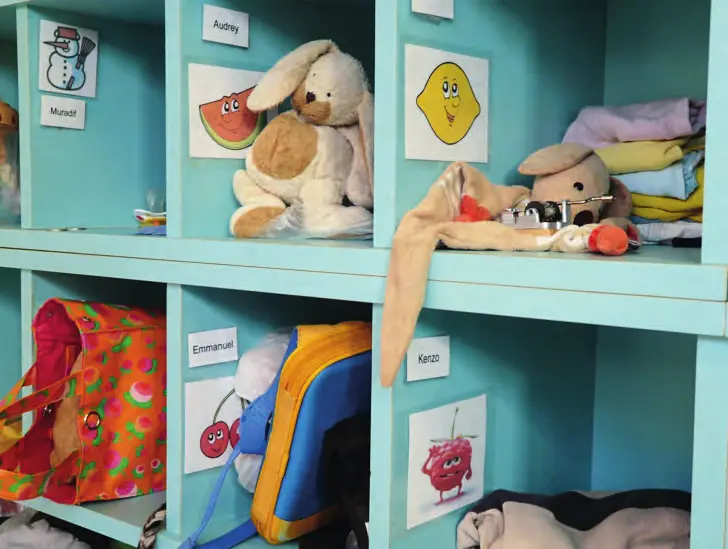
Interview« Neuchâtel, art de vivre et innovation »
Olivier Arni, président de la Ville, décline la nouvelle devise en axes stratégiques
 Interview
InterviewÉducation, Santé et Mobilité – Christine Gaillard, une volonté politique affirmée
La conseillère communale de Neuchâtel
 Interview
InterviewL'Arc jurassien, une vue de l'esprit ?
Pierre-Alain Rumley en toute franchise – Interview du professeur d'aménagement du territoire et d'urbanisme à l'Université de Neuchâtel
 Interview
InterviewLe canton du Jura dans l'Arc jurassien – Une fenêtre ouverte sur Bâle
Interview de Madame Elisabeth Baume-Schneider, Ministre jurassienne de la Formation, de la Culture et des Sports
 Interview
InterviewBienne, prospère et dynamique – Au carrefour des langues et des régions
Interview de Monsieur Erich Fehr, maire de la ville de Bienne
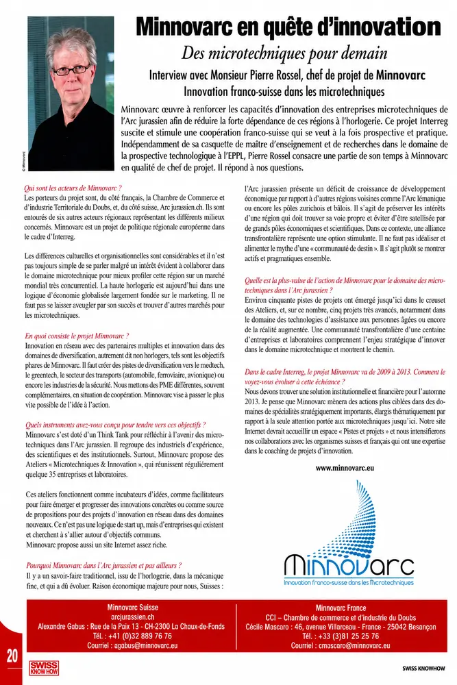
InterviewMinnovarc en quête d'innovation – Des microtechniques pour demain
Interview avec Monsieur Pierre Rossel, chef de projet de Minnovarc – Innovation franco-suisse dans les microtechniques
 Interview
InterviewNeuchâtel, un pôle de formation – Mieux orienter les jeunes
Interview avec Monsieur Philippe Gnaegi, directeur du Département de l'Éducation, de la Culture et des Sports (DECS)
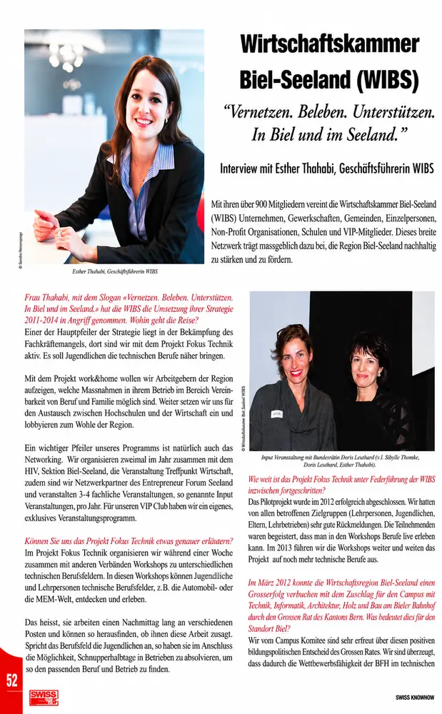
InterviewWirtschaftskammer Biel-Seeland (WIBS) – «Vernetzen. Beleben. Unterstützen. In Biel und im Seeland.»
Interview mit Esther Thahabi, Geschäftsführerin WIBS
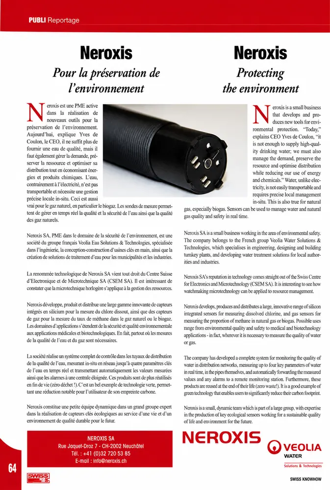
PublireportageNeroxis – Pour la préservation de l'environnement
Neroxis – Protecting the environment
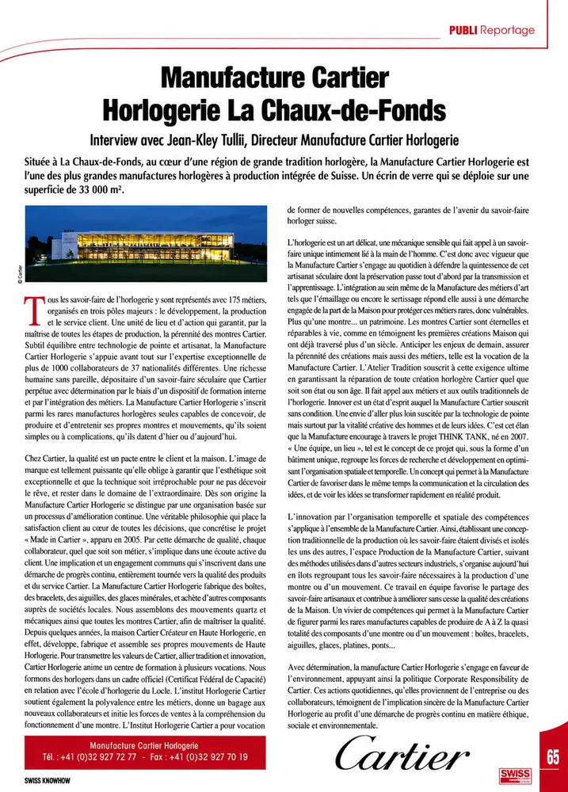
PublireportageManufacture Cartier Horlogerie La Chaux-de-Fonds
Interview avec Jean-Kley Tulli, Directeur Manufacture Cartier Horlogerie
Publireportage
NMS Bern – «Bei uns stehen die Lernenden im Zentrum»
Interview mit Annette Geissbühler, Direktorin NMS / « L'élève est au centre de nos préoccupations »
Interview
Zürcher Handelskammer (ZHK) – Wirtschaftswochen
Interview mit Giulia Bonaldi
Interview
Zürcher Handelskammer (ZHK) – Direktion
Interview mit Beat Zimmermann, Stv. Direktor ZHK
 Interview
InterviewLernpädagogisches Zentrum Zürich
Interview mit Ruth Gisler, Schulleitung und Claude Jubin, Stellvertreter Schulleitung LPZ
 Interview
InterviewUniversitätsSpital Zürich
Im Gespräch mit Spitaldirektorin Rita Ziegler
 Interview
InterviewCc-Ti Servizio politica economica – Condizioni quadro adeguate per vincere la concorrenza
Rinaldo Gobbi, Vicedirettore (version anglaise incluse)
DossierCc-Ti Formazione – Formazione di base e continua all'avanguardia
Quality basic and advanced training
DossierCc-Ti Eventi – Conferenze, seminari, incontri e assemblea
Conferences, seminars, meetings and assembly
 Interview
InterviewIl REG – Fondazione dei Registri svizzeri dei professionisti nei rami dell'ingegneria, dell'architettura e dell'ambiente compie 60 anni
Intervista al Presidente Dott. Ing. Giuliano Anastasi (version anglaise incluse)
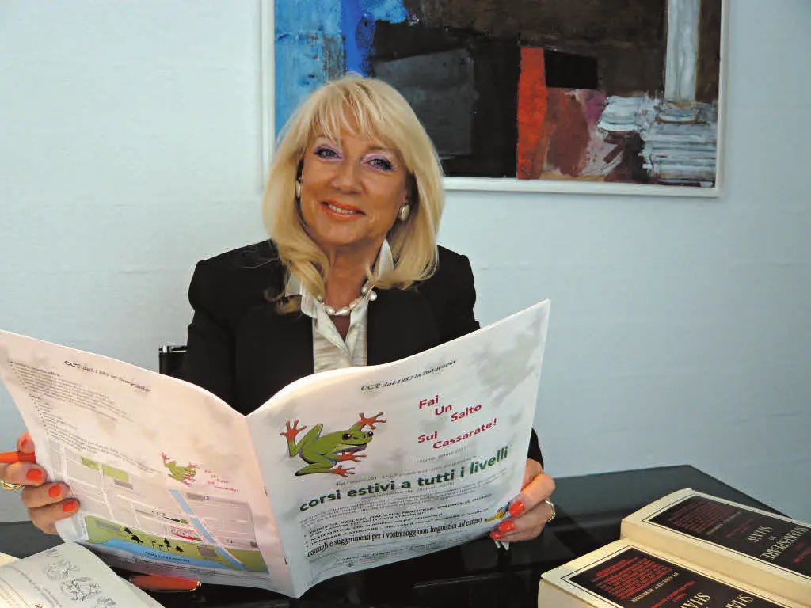
PublireportageCCT Formazione Linguistica e Culturale – La qualità al servizio degli allievi
Margaret De Lorenzi-Pertot, direttrice (version anglaise incluse)
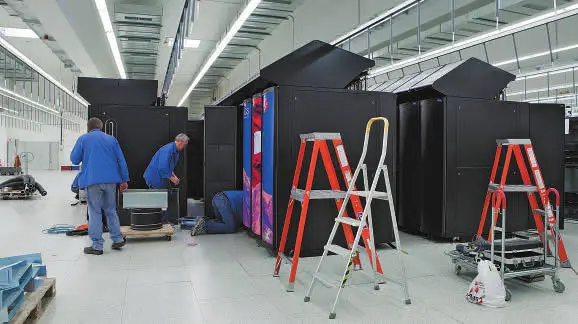
PublireportageCSCS, il Centro nazionale di supercalcolo nella nuova innovativa struttura di Lugano
Swiss National Supercomputing Centre (version anglaise incluse)
Publireportage
Erbicol SA – Ricerca e sviluppo alla base del successo
R&D as the foundation for success – Luca Romelli, direttore generale
 Interview
InterviewL'indispensable « U » des HUG
Une interface nouvelle entre l'Hôpital et la Faculté – avec le professeur Jean-Louis Carpentier (version anglaise incluse)
InterviewInfarctus : diminuer le risque de récidive
Les HUG ont initié le programme ELIPS® à l'échelle nationale – avec le Dr Pierre-Frédéric Keller (version anglaise incluse)
InterviewLa médecine génétique
Genève au cœur d'une révolution médicale – avec le professeur Stylianos Antonarakis (version anglaise incluse)
InterviewLa chirurgie entre dans une nouvelle ère
Les HUG leaders en chirurgie robotique – avec le professeur Philippe Morel (version anglaise : Surgery enters a new era)
InterviewLes anévrismes intracrâniens
@neurIST, un projet porteur d'espoir – avec le Dr Philippe Bijlenga (version anglaise incluse)
InterviewLe laboratoire de virologie
Un centre de référence national – avec le professeur Laurent Kaiser (version anglaise incluse)
Interview« Prometheus » contre Parkinson
Les HUG au centre d'un vaste projet de recherche – avec le professeur Pierre Burkhard (version anglaise incluse)
InterviewLa recherche clinique aux HUG
Un centre au service des chercheurs – avec le professeur Bernard Hirschel (version anglaise incluse)
DossierOncologie : les HUG à la pointe
Un écrin spécialisé pour la recherche – avec le professeur Pierre-Yves Dietrich (version anglaise incluse)
InterviewHUG et EPFL unis contre le cancer
La stratégie du vaccin thérapeutique – avec le Dr Nicolas Mach (version anglaise incluse)
DossierCIBM : une plate-forme de recherche au service de la médecine
Avec le Dr François Lazeyras, directeur du CIBM Genève (version anglaise incluse)
DossierMicroPET : la plate-forme genevoise d'imagerie moléculaire du CIBM
Version anglaise : MicroPET: the Genevan platform for CIBM molecular imaging
 Dossier
DossierUn centre d'étude en neurosciences unique en Europe
Brain and Behaviour Laboratory (BBL) – avec le professeur Patrik Vuilleumier, codirecteur
DossierUne formation pour éviter les erreurs au bloc opératoire
Le cours « Crew Resource Management » Swiss-HUG – entretien avec le Dr Domizio Suva
DossierDe l'excellence académique au succès économique
UNITEC, dix ans de transfert de technologies – entretien avec Laurent Mieville
DossierThérapies cellulaires en plein développement
SICT, une fondation qui accélère le mouvement – entretien avec la Dre Marisa Jaconi
DossierOsiriX, l'imagerie médicale en 3D à la portée de tous
Un logiciel libre né aux HUG – professeur Osman Ratib et Dr Antoine Rosset
PublireportageCentre d'imagerie biomédicale (CIBM)
Un modèle de collaboration dans le domaine de la recherche
PublireportageLa Croix-Rouge genevoise, au service de la population
Entretien avec Mme Eliane Babel-Guérin, directrice
 Publireportage
PublireportageReactolab SA
Une distribution multiqualitative et personnalisée
Publireportage
Industrial property and health
Interview with Mr Jean-Alain Schulz – Bugnion SA, conseils en propriété intellectuelle
Entreprises
ADV Constructions SA
Bâtiment et génie civil
AFDT – Association des fabricants de décolletage et taillage
Association professionnelle
Altair-Consulting SA
Prototypage et impression 3D
Answer SA
Logiciels financiers et cybersécurité
apiah – Association patronale des industries de l'Arc horloger
Association patronale
Archeodunum SA
Archéologie préventive

arcjurassien.ch
Association intercantonale de développement régional
Argonet SA
Intégration informatique et télématique
ASRH – Association Suisse pour la Recherche Horlogère
Recherche horlogère communautaire
Atelier für Direkte Demokratie / Atelier pour la démocratie directe
Atelier de réflexion et maison d'édition (démocratie directe)
ATIO – Associazione Ticinese Industria Orologiera
Association de l'industrie horlogère tessinoise
AUCHLIN SA
Polissage de précision et traitements thermiques
Bergauer AG
Logiciels de gestion du trafic et des infrastructures
Biopôle SA
Parc des sciences de la vie

Brain and Behaviour Laboratory (BBL)
Centre de recherche en neurosciences
Bugnion SA
Conseils en propriété intellectuelle
Camera di commercio, dell'industria, dell'artigianato e dei servizi del Cantone Ticino (Cc-Ti)
Chambre de commerce
Cardiocentro Ticino
Centre de cardiologie et chirurgie cardiaque
CCI – Chambre de commerce et d'industrie du Doubs
Chambre consulaire (France)
CCT Formazione Linguistica e Culturale
École de langues
ceff INDUSTRIE – Centre de formation professionnelle Berne francophone
Formation professionnelle technique
CEFNA – Centre de formation neuchâtelois pour adultes
Formation professionnelle pour adultes
CEJEF – Division technique
École technique et professionnelle
Centre d’Etudes et de Transferts Technologiques de la HEIG-VD (CeTT)
Recherche appliquée et transfert technologique

Centre d'Imagerie Biomédicale – CIBM
Recherche en imagerie biomédicale
Centre de formation horlogère (CFO – Centro di formazione orologiero)
Centre de formation et de reconversion horlogère
Centre de l’énergie (CEN) de l’EPFL
Coordination de la recherche en énergie

Centre de médecine universitaire CMU – Département de médecine génétique et développement
Recherche et diagnostic en médecine génétique
Centre hospitalier universitaire vaudois (CHUV)
Hôpital universitaire
CFH – Centre de Formation dans le domaine de l'Horlogerie
Formation horlogère pour adultes
Chambre de commerce et d'industrie Fribourg (CCIF) / Handels- und Industriekammer Freiburg
Chambre de commerce
Chemie Brunschwig AG
Fournitures pour laboratoires et production
CIFER – Communauté d'Intérêts pour la Formation des Electriciens de Réseau
Centre de formation professionnelle
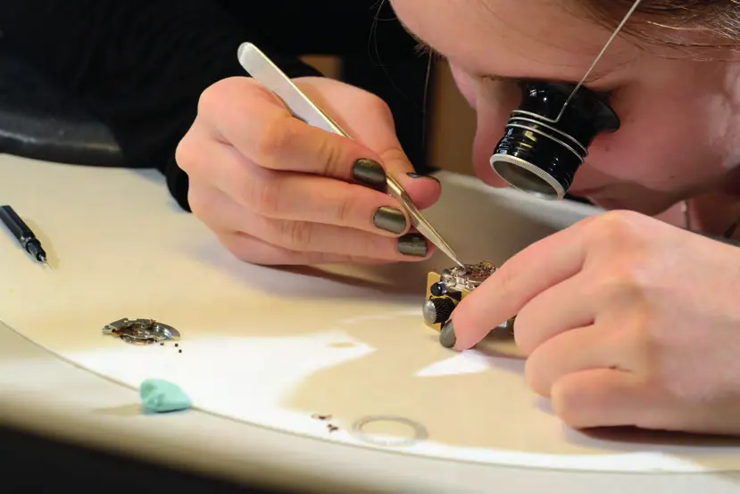
CIFOM – Centre interrégional de formation des montagnes neuchâteloises
Formation professionnelle et continue
CIP – Centre interrégional de perfectionnement
Formation continue pour adultes
Commune de Cossonay
Commune

Convention patronale de l'industrie horlogère suisse (CPIH)
Organisation patronale et partenaire social
CREM (Centre de recherches énergétiques et municipales)
Recherche appliquée en énergie urbaine

Croix-Rouge genevoise
Association humanitaire et sociale
CSCS – Centro Svizzero di Calcolo Scientifico (Swiss National Supercomputing Centre)
Centre de calcul scientifique
CTM SA – Centre de Technologies Microtechniques
Plasturgie, électroérosion, MIM et étampage
D’Andrea Michel SA
Travaux acrobatiques et sur corde
Datamed
Informatique médicale
Departement Chemie Universität Basel
Département universitaire de chimie
Département de physiologie – Université de Lausanne
Département universitaire de recherche en physiologie et métabolisme
École française de Berne (EFB)
École internationale
École Minerva Sàrl
École de formation paramédicale
Ecole Nouvelle de la Suisse Romande (ENSR)
Ecole privée
École polytechnique fédérale de Lausanne (EPFL)
Haute école polytechnique
École technique de la Vallée de Joux – ETVJ
École technique
Eichenberger Futuretech AG
Fusion sélective laser (SLM) et prototypage
EPFL – Laboratoire de photovoltaïque et couches minces électroniques (PV-Lab)
Recherche en photovoltaïque

EPHJ – Salon international de la haute précision
Salon professionnel
Erbicol SA
Pierres synthétiques pour l'horlogerie et céramiques poreuses
ERTEC SA
Ingénierie routière et essais de matériaux

Fondation Dr Henri Dubois-Ferrière Dinu Lipatti
Fondation de soutien à la recherche contre le cancer
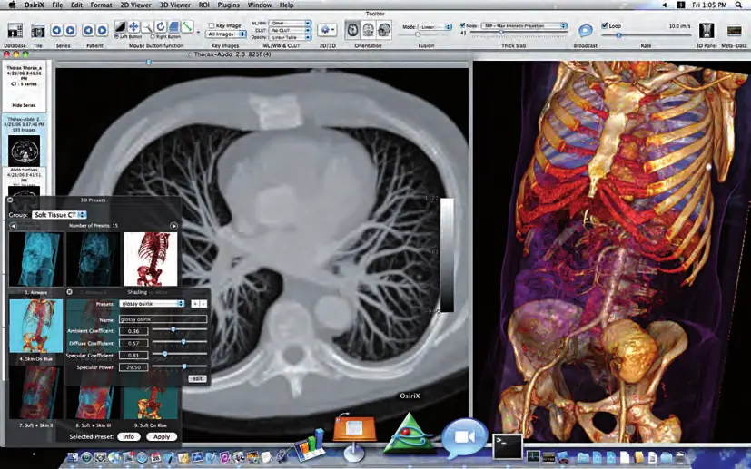
Fondation OsiriX
Fondation (logiciel libre d'imagerie médicale)

Fondation pour les Nouvelles Technologies Chirurgicales (FNTC)
Fondation de recherche en technologies chirurgicales
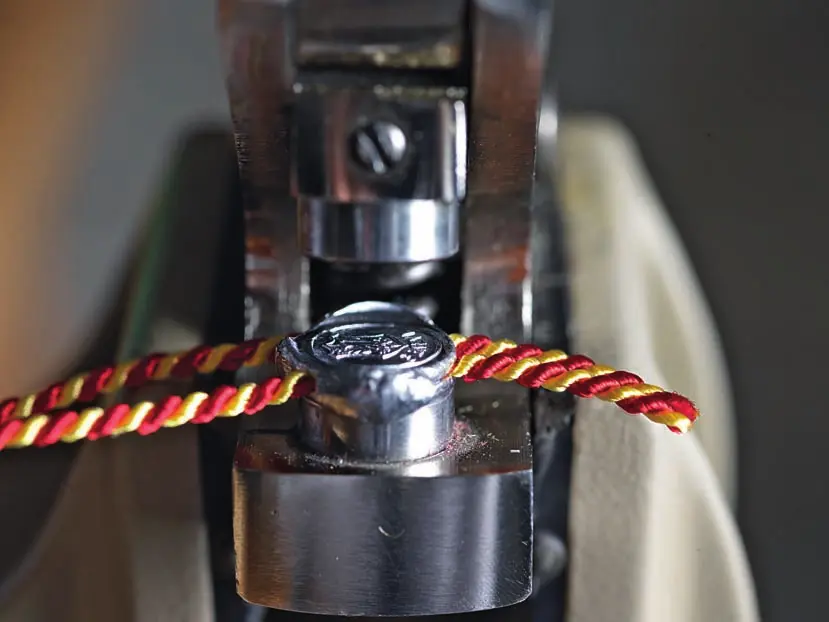
Fondation Timelab
Certification horlogère (Poinçon de Genève)
Fondation WOSTEP
Formation et perfectionnement horloger
GB Microfab
Microtechnologies appliquées aux composants horlogers
GEMS World Academy International School-Etoy
École internationale privée
Gymnase français de Bienne
Ecole de maturité
H+ Die Spitäler der Schweiz
Faîtière des hôpitaux, cliniques et institutions de soins
Handels- und Industrieverein des Kantons Bern – Sektion Emmental
Association économique
Haute École Arc Ingénierie
Haute école d'ingénieurs
Haute Ecole de Santé Vaud (HESAV)
Haute école de santé
Haute Ecole Pédagogique Vaud (HEP Vaud)
Formation des enseignants
HES-SO Valais-Wallis – Haute Ecole d’Ingénierie (HEI)
Haute école d’ingénierie

HFR – Hôpital fribourgeois / freiburger spital
Hôpital public cantonal
Hochschule für Wirtschaft FHNW
Haute école spécialisée en économie
Hôpitaux universitaires de Genève – HUG
Hôpital universitaire
HUG – UNITEC, Office of Technology Transfer (Université de Genève)
Transfert de technologies
Humabs BioMed SA
Biotechnologie – anticorps thérapeutiques
IDIAP (institut de recherche)
Recherche en gestion de l'information multimédia
IMP Bautest AG
Essais de matériaux, conseil en construction et analyses
Impuls Mittelschule
Relations publiques des gymnases zurichois
Inselspital – Universitätsklinik für Hals-, Nasen- und Ohrenkrankheiten, Kopf- und Halschirurgie
Clinique universitaire ORL
Institut de Génie Thermique (IGT) de la HEIG-VD
Recherche et formation en énergie
Institut fédéral des hautes études en formation professionnelle IFFP
Formation et recherche en formation professionnelle

Institut suisse de thérapies cellulaires (Swiss Institute of Cell Therapies, SICT)
Fondation de recherche en thérapies cellulaires
International School of Berne (ISBerne)
Ecole internationale
IT Valley (Cluster)
Cluster informatique
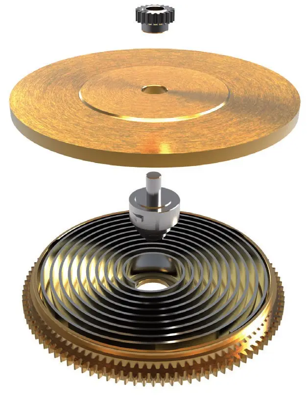
KIF Parechoc SA
Antichocs, raquetterie et décolletage de précision
Laboroute SA
Laboratoire de matériaux routiers
Lausanne Hospitality Consulting SA (LHC)
Conseil en hôtellerie et accueil
Lernpädagogisches Zentrum AG (LPZ)
Ecole privée et soutien scolaire
Manufacture Cartier Horlogerie
Manufacture horlogère intégrée
MaxiVAX
Start-up biotechnologique – vaccins thérapeutiques
Minnovarc – Innovation franco-suisse dans les microtechniques
Programme Interreg d'innovation
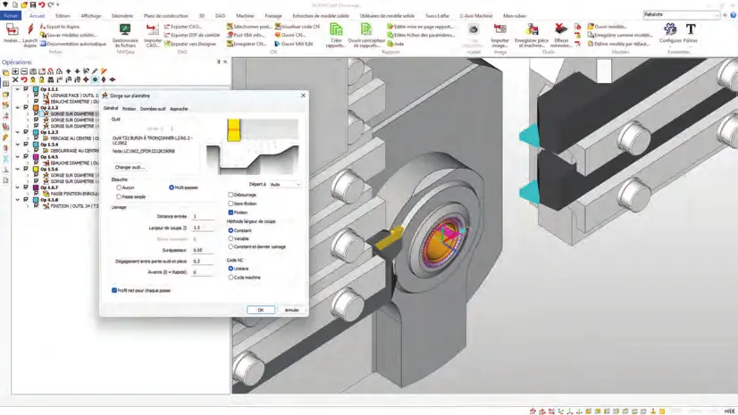
MW Programmation SA
Logiciels CFAO et services de commande numérique
Neroxis SA
Capteurs pour la qualité de l'eau et du gaz
NGL Cleaning Technology SA
Produits de nettoyage industriel à base aqueuse
NMS Bern
Ecole privée et formation des enseignants
Pôle Energies HEIG-VD
Coordination de la recherche en énergie
Policlinique médicale universitaire Lausanne (PMU)
Médecine générale et communautaire universitaire
Reactolab SA
Distribution de produits chimiques et de matériel de laboratoire
REG – Fondazione dei Registri svizzeri dei professionisti nei rami dell'ingegneria, dell'architettura e dell'ambiente
Registre professionnel
Région de Nyon
Association intercommunale de développement régional
République et canton de Neuchâtel – Département de l'éducation, de la culture et des sports (DECS)
Administration cantonale – formation
République et canton du Jura – Département de la Formation, de la Culture et des Sports
Administration cantonale – formation
Réseau fribourgeois de santé mentale (RFSM)
Psychiatrie et santé mentale
Ryf AG
Microscopie industrielle et systèmes de mesure
Schuldirektion der Stadt Solothurn
Écoles communales
Schule Aarau
École obligatoire
Schweizerische Bauschule Aarau
École supérieure de la construction
Schweizerische Bundesbahnen SBB
Chemins de fer fédéraux – infrastructure ferroviaire
Société Suisse de Chronométrie (SSC)
Organisation professionnelle horlogère
Solmani SA
Signalisation dynamique et smart city
Solothurner Handelskammer (SOHK)
Chambre de commerce
Staatssekretariat für Bildung, Forschung und Innovation SBFI
Administration fédérale de la formation et de la recherche

Stadt Bern – Präsidialdirektion
Administration communale

Stadt Biel – Wirtschaft / Statistik
Administration communale
Stadtbüro Stadt Baden
Administration communale
Swiss Institute for Regenerative Medicine (SIRM)
Recherche en médecine régénérative
Swiss Stem Cell Bank SA (SSCB)
Biobanque de cellules souches
Swiss Welding Institute – Institut Suisse de la Soudure (SWI)
Formation, recherche et expertise en soudage
Technical Watchmaker Show (TWS) – Event High Sàrl
Salon de la sous-traitance horlogère
Universität Bern
Université
Universität Bern – Rektorat
Université
UniversitätsSpital Zürich (USZ)
Hôpital universitaire
Université de Fribourg
Université – formation et recherche en médecine
Université de Genève – Faculté de médecine
Faculté universitaire de médecine
Université de Neuchâtel – Faculté de droit, Centre en aménagement du territoire et urbanisme
Enseignement supérieur et recherche
Université Ouvrière de Genève (UOG)
Formation pour adultes
usic – Union Suisse des Sociétés d’Ingénieurs-Conseils
Organisation patronale des bureaux d’ingénieurs
Ville d'Aubonne
Commune
Ville de Fribourg
Administration communale
Ville de Gland
Commune
Ville de Lausanne
Commune
Ville de Martigny
Administration communale
Ville de Neuchâtel – Conseil communal
Administration communale
Ville de Sierre
Administration communale
Ville de Sion
Administration communale
VSS – Schweizerischer Verband der Strassen- und Verkehrsfachleute
Association professionnelle et normalisation routière
Wirtschaftskammer Biel-Seeland (WIBS) / Chambre économique Bienne-Seeland
Chambre économique régionale
Zürcher Handelskammer (ZHK)
Chambre de commerce
Aucun résultat.
Magazines
Tous les PDF


Économie régionale · 2015
Swiss Knowhow – Fribourg, Berne-Bienne et Tessin (mai 2015)


Collectivités · 2014
Swiss Knowhow – Union des villes suisses : Suisse alémanique (2014)

Collectivités · 2014
Swiss Knowhow – Union des villes suisses : Valais et Neuchâtel (2014)


Économie régionale · 2012
Swiss Knowhow – Camera di commercio del Cantone Ticino (Cc-Ti) (2012)